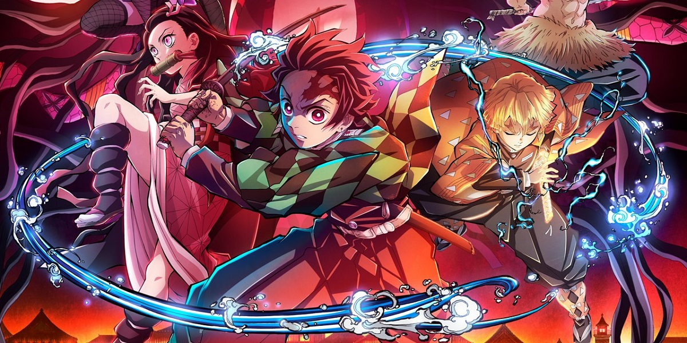

O universo de Demon Slayer
Em um Japão feudal envolto por mistérios e perigos, Demon Slayer nos convida a embarcar na jornada emocionante de Tanjiro Kamado, um jovem bondoso que vê sua vida virar de cabeça para baixo quando sua família é brutalmente assassinada por demônios. A única sobrevivente é sua irmã, Nezuko, mas ela carrega um destino sombrio: foi transformada em um demônio. Movido por um amor fraternal inquebrável e uma esperança desesperada de salvá-la, Tanjiro se junta ao seleto e rigoroso Corpo de Extermínio de Demônios. Ele não é apenas um espadachim habilidoso em constante crescimento, mas um coração puro em um mundo corrompido. A história ganha ainda mais vida com personagens memoráveis, como Zenitsu, um covarde com flashes de coragem surpreendente, e Inosuke, o guerreiro de espírito selvagem e uma cabeça dura — literalmente. Enquanto enfrenta inimigos assustadores, Tanjiro descobre que, por trás de cada demônio, há uma história de dor e tragédia. Isso o faz lutar não apenas com sua lâmina afiada, mas também com compaixão, uma rara luz em um mundo mergulhado na escuridão. Demon Slayer é uma história de perdas devastadoras, vínculos inquebráveis e uma determinação que atravessa as barreiras do sobrenatural, envolta em uma animação deslumbrante e batalhas de tirar o fôlego. Uma saga que nos lembra que, mesmo nos momentos mais sombrios, a humanidade pode brilhar como o amanhecer.
Personagens Principais
Tanjiro Kamado
Tanjiro tem como fio principal 2 objetivos: transformar sua irmã novamente em humana e se vingar do demônio que destruiu sua família.
Nezuko Kamado
Irmã de Tanjiro, transformada em demônio, mas cheia de humanidade e amor.
Zenitsu Agatsuma
Zenitsu foi treinado por um ex-Hashira e dominou a Respiração do Trovão, mas por ele conter uma personalidade e pensamentos difíceis.
Episódios Favoritos
Episódio 17
Seja mestre de uma única coisa.

Episódio 20
Família de faz-de-conta.
Episódio 21
O clímax da primeira temporada.